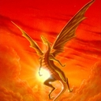

Forums galactiques > Assemblée Galactique : diplomatie officielle > Deviance
Pages : 1
| Araskel Respect diplomatique : 396  30/04 ETU 22:27 | Score : 14 Détails In'Garat, Palais Imperial, salle du trône de A'Dja
Tous morts. Explosés, dechiquetés, massacrés. Du sang, partout, tapissait les murs surchargés de décorations trop voyantes. Les meubles renversés se mêlaient aux cadavres des restes de soldats. Le sang chaud et poisseux souillait les pieces d'étoffes, et au centre de la pièce, la tête entre les mains...A'Dja. A peine sorti de son enième cure de désintoxication, et après s'être fait quatre traces de neocoke directement importé de colombialand, il avait convoqué ses principaux Hierarques de guerre pour faire le point. L'empire était en pleine deliquescence, même un camé comme lui aurait pu le comprendre. Des cultes nouveaux affluaient de toute part, et aux points les plus eloignés de la capitale, des systemes entiers se soulevaient contre le gouvernement central de In'Garat, se proclamant territoire Tribale, malgrés l'interdiction de vivre en tribu proclamée au debut du règne de A'Dja. Des meutes d'anciens citoyens se dirigent comme des loups vers la Capitale. Mû par une force incroyable, resistant aux attaques des troupes imperiale, decimant des flottes entieres, et partout, partout, a plusieurs endroit a la fois, au coeur de la mélée, dans n'importe quelle embuscade, il était la... Ce géant d'acier, une monstrueuse machine a tué, semble invincible. Cette horreur qui apparraissait dans les cabines de pilotage des Croiseurs Lourds Amiraux, qui fonçait depuis l'espace dans les canons ioniques des vaisseaux, et ressortait par la soute en perçant adamantium, équipage, et machine de navigation... Cette espèce de monstre abruti, muet et inexpressif, bardé de pointes et couvert de sang, qui, une fois le carnage finit, empalait ses victimes sur cette arbre. Ce foutu arbre en métal, couvert de victimes...oh putain! A'Dja avait vu ces conneries de vidéos, il avait vu les hommes, encore en vie, empalés sur l'arbre et hurlant à la mort comme des chiens blessés. Il les avait vu se faire dessus, perdre tout contrôle... Dès qu'il fermait les yeux, des scènes d'hecatombe lui apparaissaient, et aucune dose de n'importe quelle drogue ne pouvait apaiser ça... Alors que les militaires lui faisaient un compte rendu détaillé sur les troubles dans ce que les rebelles appelaient le territoire des griffes rouges, il mit sa tete entre ses mains et prit d'une angoisse lancinante... Il le sentait! cette saloperie trainait dans le coin, il en était sûr! Encore un peu et il viendrait, pour l'empaler lui aussi sur cet arbre... Système central de l'empire, pc capital, espace. Seul et souffrant. Comme d'habitude dirait-il, s'il était ce que les autres appelaient vivants. Non pas qu'il était mort, c'est juste que sa conscience, elle, était passée de l'autre coté il y a déjà trop longtemps. Oh! il se souvenait de tout, même de son nom. Araskel. Seulement, tout était si loin maintenant, noyé dans un flot de souffrance et de soif de sang. Toujours ce voile carmin, même dans ces souvenirs. Toujours cette distance avec l'exterieur, même le temps lui semblait flou. Toujours est-il qu'une chose le tiraillait: La voix avait dit qu'il devait soumettre cette planète à la Deviance , cette planète serait donc Deviante. La vie était si simple pour une machine à tuer. A suivre... | ||
| Groochie Respect diplomatique : 709  01/05 ETU 18:30 | Score : 10 Détails Deux jours !!!!!!!
Deux jours que le camarade Groochie était sortie de son coma et rien ne s’emblait plus comme avant. Pour certain le camarade Groochie était toujours le même, mais pour ses proches Groochie n’était plus le même du tout. Depuis deux jours il avait fait exécuter 14 de ses généraux sans que cela se sache, pour justifier ses actes il prétendait que ce n’était que des traîtres. Le maréchal, lui, n’avait pas encor été exécuté, non, pour lui, Groochie réservait une mort atroce plus les tortures que vont avec. En tout cas il y’avait quelqu’un qui appréciait le nouveau Groochie, le général l’Eclaire, et quoi de plus normal pour un ancien extrémiste. Et le temps passe. Voila maintenant un mois que le camarade est revenue, et la, notre monde sombre dans la dictature, Groochie fait exécuter tout les gens qu’il pense être des traîtres. Il est devenue complètement parano et ne fait plus confiance qu’à trois personnes : -L’amiral Petro k6 -le général l’Eclaire -et lui-même Le Maréchal est dans sa cellule lorsque la porte s’ouvre : Petro k6 : « Venez maréchal, venez vite, nous n’avons pas de temps à perdre. » « Amiral, vous, ici, pour me libérer ?? C’est la dernière chose à laquelle je m’attendais. » « Nous parlerons plus tard, avançons. » L’amiral, le maréchal et quelques soldats fidèles à lui, se dirigèrent hors de la prison, malheureusement leur fuite ne fut que de courte durée. Groochie, accompagné du général l’Eclair et d’un bataillon complet de soldat les attendaient. Groochie : « Amiral, qu’avez-vous fait, vous, mon plus fidèle officier, tu était comme mon frère et tu me poignarde dans le dot avec se traître ?? Tu ne me laisses pas le choix, je vais devoir prendre les mesures nécessaires, mais ne t’inquiète pas, ta mort sera longue et douloureuse. » « Monstre, vous n’êtes pas Groochie.... » Petit à petit l’apparence de Groochie changeait, ses magnifiques yeux de félins étaient devenus rouges, sa mâchoire devenue des crocs de démon, des piques écailleux sortait de part et d’autre de son corps mutilé. Un monstre sanglant sans état d’âme était né, un monstre paranoïaque, n’hésitant pas à massacré sa propre population par crainte de se faire tué. Le Groochie déviant est né. | ||
| Glokzy Zounourss Respect diplomatique : 228  01/05 ETU 23:16 | Score : 10 Détails HRP : Moi j'ai pas oublié de mettre une musique d'ambiance haha ^^ désolé si le Rp n'est pas super, j'ai pas l'habitude de faire des trucs dans le genre... Mais bon pas grave voilà la musique : http://ldcthanatos.free.fr/radio3/?autoplay=1 (tant pis si ça va pas avec le reste ça reste la classe ^^")
Depuis quelques temps, le grand prêtre Glokzy Zounourss ne venait plus prier les idoles chapsiques. Depuis quelques temps, il était rare de le voir sur les écrans holo-chapsons, ou à l'assemblée. Quand il y apparaissait, il avait l'air fatigué et nerveux. Il regardait partout, comme s'il se sentait espionné. Il avait même fait l'éloge de Tyrian devant un Ordre des Frites transi d'effroi. Cette fois-ci, Djezz Zounourss le sentait, son frère était devenu fou. Bien que considéré comme ennuyeux et trop sérieux pour être dans l'Ordre par les autres chaps, il avait rassemblé la moitié du Grand Cocotier Chapsard contre son frère. Selon lui, l'héritière sadique du protoss Grabeuh avait transformé son frère. Il devenait violent et n'acceptait plus de visites à part son frère et ses amis de la coalition. La semaine dernière, Djezz l'avait trouvé encore plus étrange que d'habitude. "Regarde ma peau, le sort s'acharne encore sur moi. - Mais non, tu dois être allergique à quelque chose, tu sais à force de ne plus chapster... - Et mes dents. Ce doit être une malédiction qu'on m'a lancé. Dieu m'en veut. Après avoir assassiné Grabeuh et certains Chaps célèbres, il veut ma peau!!" Des plaques vertes se formaient sur la peau chapsique de Glokzy, son sourire, autrefois digne de ColgateMan, faisait maintenant penser à celui du défunt NeoDracula, et chaque extrémité de son corps s'était ornée de griffes et de piques diverses. Après cet épisode, Djezz dut aider Glokzy à gouverner, car celui-ci ne pensait plus qu'à améliorer le nombre et l'équipement des Chapsogardes. Au moins, le taux de criminalité avait baissé... Aujourd'hui, le 01/05 ETU, Djezz reçut les analyses faites sur Glokzy. Quelques tâches de sang ornaient la lettre déjà ouverte, laquelle contenait une feuille où était inscrits les mots suivants : "Glokzy Z. n'est pas malade. Glokzy Z. est simplement Déviant." | ||
| Alnia. Respect diplomatique : 867  02/05 ETU 08:48  | Score : 10 Détails Une orgie de sang.
Alnia venait de faire empaler toute la population d'une planète récemment conquise, sur un coup de tête. Elle avait eu envie de voir le liquide rougeatre et chaud couler lentement des plaies de millions de victimes. Lorsque tout aurait coagulé, laissant sur cette planète une odeur de pourriture et de sang caillé, tout serait incendié, pour purifier par le feu tous ceux qui n'avaient pas eu la chance d'être élevés au rang suprème d'élus. De ses yeux bleus, Alnia regardait la scène avec amusement, une mer d'un rouge vif s'étalant sur plusieurs milliers de kilomètres. Elle éclatait parfois d'un rire aigüe et perçant, comme pour encore transpercer les suppliciés. Les corps mutilés provoquaient en elle quelque chose de proche de l'orgasme, une jouissance prenant aux tripes et laissant un plaisir malsain dans le regard. La folie meurtrière d'Alnia se développait comme gangrène. Alors qu'elle allait partir, un jeune homme armé d'un bout de tôle arraché à une carcasse de vaisseau tenta de lui sauter à la gorge. C'était un petit gringalet, à peine plus musclé qu'un enfant Alors qu'il allait commencer à trancher le cou d'Alnia, celle-ci explosa de rire, attrapa le jeune homme à la gorge, serra fort, mais en contrôlant suffisamment la pression pour le garder conscient. Elle le regarda droit dans les yeux. Amusant. Le désespoir en toi est assez grand pour te faire faire des actes stupides. Je vais t'crever ! Salope ! Déchaine ta haine contre moi... Assouvis tes pulsions. J'adore voir les gens comme toi souffrir... Pourquoi t'as fait ça ! Reponds pauv'e pute ! Simplement pour mon plaisir... Salooope ! Reste poli, mon petit, ou je me ferais une joie de serrer plus fort ta gorge jusqu'à t'étouffer... Plutôt que de te venger, ce qui ne t'ammènera à rien, cultive ta souffrance et ta haine et fais d'elles une force. Dis toi que c'est le destin qui t'a gardé en vie et qui t'a amené jusqu'à moi...Tu seras l'un des quatre... Le jettant à terre, elle donna quelques ordres précis à ses Berzerkers et dit : Emmenez le au secteur 4. Et ammenez moi les papiers pour faire officialiser le nouveau nom de la planète. "Mort" sera un nom parfait... Montant dans son vaisseau de commandement, Alnia regarda une dernière fois le seul survivant, en sanglots alors qu'il était trainé au sol par deux soldats en direction d'une navette marquée d'un 4. Il fut par la suite torturé, entrainé contre son gré, reçut un véritable lavage de cerveau, faisant de lui une machiner à tuer, un guerrier invincible, prisonnier de sa souffrance, ce qui lui donnait encore plus de force et de rage de vaincre. L'art d'affamer Une semaine plus tard, Elle ordonna de faire brûler toutes les récoltes d'une planète prise au hasard, d'y tuer tous les animaux, détruire tous les stocks de nourriture et de mettre en place un embargo total. Affamer la population allait prendre facilement un mois, peut-être plus s'ils décidaient de s'entre dévorer... Elle demanda à ce que le dernier survivant soit directement emmené au secteur 4. Tout les végétaux furent incendiés. Toute source de viande fut empoisonnée. Et les mers furent polluées au mercure, tuant tous les poissons. Enfin, tous les convois apportant de la nourriture à cette planète étaient abattus en route à l'aide de vaisseaux volés aux pirates de l'OQVVDB. A part manger de la terre pour les plus désespérés, rien ne pouvait satisfaire la faim des habitants, et encore, ceci était temporaire et n'était qu'un simulacre de repas, les épuisant encore plus en les faisant digérer sans leur apporter de quoi compenser l'énergie dépensée. Au bout d'un mois et demi, une jeune fille blonde, ravagée par la faim, maigre et couverte de sang humain séché, mais dernière survivante de son peuple, était mise dans une camisole de force, se retrouvait bardée de perfusions et était emportée dans un vaisseau jaune foncé. Le lendemain, la planète s'appellait "Famine". Après avoir été nourrie en conséquence, puis condamnée pendant de longues semaines à un véritable suplice de Tental elle fut entrainée à affamer le monde, utilisant les tortures qu'elle avait subi comme une raison d'obliger les autres à mourir de faim. La peste soit d'Alnia... Ebola, Malaria, Tuberculose, Lèpre, Pneumopathie, Paludisme, Anthrax, VIH, SRAS, Choléra, Peste bubonique, Grippe espagnole, toutes les pires maladies connues dans toute la galaxie. Et puis aussi la variole. C'est démodé, mais tellement théatral... Le tout, déversé par containeurs pleins sur une pauvre planète prise au hasard, qui se serait sans doutes passée d'un tel cataclysme. Une véritable déferlante de pathologies mortelles, lancées par bombes, futs, caisses, cargos, dans l'eau, la nourriture, pulvérisées par nuages sur les villes, de quoi décimer une population en moins d'une semaine. Et si quelqu'un résistait à l'une des maladies, ce serait la suivante qui viendrait à bout de lui. J'adore l'odeur de la mort au réveil... Ca me met de bonne humeur pour la journée... Alnia venait de se réveiller dans sa tente de haute protection biologique après avoir assisté pendant 6 jours à l'éradication de toute vie sur cette planète. Lorsque les équipes médicales ammenèrent devant elle une jeune femme aux cheveux d'un noir d'ébène au visage sublime, si l'on mettait de côté le fait qu'il était ravagés par les pustules, qu'elle était couverte de bubons purulents, qu'elle avait le teint verdatre et qu'elle s'était uriné dessus. Alnia venait de trouver sa troisème cavalière de l'Apocalypse, celle qui avait survécu à toutes les maladies. Renomez la planète "Pestillence" et ammenez la fille au secteur 4.Faites lui suivre le programme "Pandemie"... Elle reçut pendant de longues semaines tous les traitements possibles et immaginables et lorsqu'elle fut soignée, ils lui administrèrent des millions de vaccins, puis des centaines de virus, bactéries, tout et n'importe quoi, faisant d'elle le plus dangereux des porteurs sains... Programmée pour tuer, elle était tellement contagieuse que toute ce qu'elle touchait de vivant fondait sous ses doigts, décomposé par les bacteries trouvant là une formidable source de nourriture. As tu déja dansé avec la Mort au clair de Lune ? Brooooooooooooom L'art de l'hivers nucléaire en une leçon par la douce Alnia. Une bombe atomique de 20 Gigatonnes lachée à 50 km d'altitude dans l'atmosphère d'une planète, provoquant une perturbation totale des pressions atmosphériques, créant un vent titanesque et soulevant de la poussière pour plusieurs années dans l'air. Il est encore plus drôle de provoquer ceci sur des planètes aux peuples relativement primitifs, ne sachant pas se protéger d'un froid aussi important pendant aussi longtemps. En quelques semaines, les gens mourraient soit des suites des radiations, soit frigorifiés. Une planète, elle encore prise au hasard, fut la cible de cette technique. Pour accélérer encore le processus, la bombe fut larguée au dessus d'une vaste plaine couverte de cristaux de sel. Asséchant l'air et le rendant irrespirrable, la mort vint faucher encore plus vite les pauvres victimes de la folie d'Alnia. La population trouva alors l'idée de se réfugier sous terre, là où l'air était respirable, pas saturé de poussière et de sel. Seule une poignée d'humains était restée à la surface. La fille de Belial les fit tous tuer, sauf une petite dizaine, qu'elle envoya dans les grottes où s'étaient réfugiés leurs semblables. Elle garda juste le plus hargneux et lui ordonna d'enfumer toutes les grottes de la planète. Chose qu'il fit avec une grande maitrise. Un tueur totalement dénué de la moindre morale. Il n'avait même pas besoin d'entrainement, il subit juste une opération de contrôle mental pour en faire un petit toutou obéissant à Alnia. On renomma la planète "Mort". Apocalypse selon Sainte Ania Lorsque ses quatre cavaliers furent totalement opérationnels, Alnia vint les inspecter. Guerre, petit maigrichon lorsqu'il avait été capturé, était devenu un colosse impressionnant, bardé d'armes et recouvert d'une imposante armure noire. Ses yeux brillaient d'une flamme de haine et n'attendait qu'une raison d'aller détruire la terre. Famine, bien qu'encore maigre, avait seulement l'air d'une anorexique normale, mais son appetit lui permettait de voler la nourriture de plusieurs villes sans grossir, son métabolisme avait été modifié par de nombreuses opérations chirurgicales et les scientifiques avaient fait d'elle un véritable puit sans fond. Alnia du porter une combinaison de protection pour approcher Pestillence, son pouvoir de contagion étant tellement fort que la lacher sur une planète revenait à condamner celle-ci définitivement. Enfin, Mort s'amusait à arracher la colonne vertébrale à de petits animaux simplement pour les entendre hurler. Après cette petite inspection, Elle fit monter ses quatre soldats de choc dans un croiseur pour les ammener combattre pour la première fois. A peine étaient ils sortis de l'atmosphère qu'un croiseur ionique foudroya le vaisseau. Croiseur ionique aux couleurs d'Alnia. Ils auront cru jusqu'à la dernière seconde que je leur laissais une chance de survivre... Mais qu'ils ont pu être naïfs... Bon, trouvez moi quatre autres planètes, qu'on puisse recommencer. J'ai envie de faire souffrir des gens, ça m'occupe... Alnia était elle devenue elle aussi Déviante ? Non, elle l'avait toujours été... | ||
| Éternité Respect diplomatique : 43  02/05 ETU 13:21 | Score : 10 Détails http://www.radioblogclub.com/open/130496/one_winged_angel/18-nobuo_uematsu-one-winged_angel_(orchestra_version)-rev
Après le roi des rats,au tour de son troupeau... Tels furent les mots d'Eternité lorsqu'il était apparu en place publique.La planète où cela s'était déroulé appartenait auparavant à un sous-commandant,un boulet minable incapable de réussir quoi que ce soit.Le niveau technologique qu'il avait atteint ne dépassait pas celui du moyen-âge. La preuve en fut qu'au débarquement des White Shadows,la flotte d'intervention d'élite mise en place par le général lui-même,ils fûrent attaqués par tirs de catapultes aux projectiles enflammés et par des fourches projetées par les habitants.Inutile de préciser qu'un unique tir ionique a suffi à annihiler le tout,tout en dévastant une partie du paysage,anéantissant pêle-mêle faune,flore et êtres humains. Les quelques vaisseaux,une quarantaine de chasseurs bombardiers rouillés et huit croiseurs légers méconnaissables,de l'empire attaqué s'étaient alors vainement dressés en face des Shadows.Pour qce que l'on eut le temps d'en distinguer,ils étaient maculés de paille et de boue,bourrés de fils dénudés et à court d'énergie. Eternité donna alors l'ordre au Shadows de concentrer leurs rayons à particules,tous ensemble,côte à côte... Le résultat escompté se produisit: lorsque les rayons furent chargés au maximum,les ondes se firent écho et finirent par entrer en résonnance... Le tir déchira le ciel et s'abattit sur le sol boueux de la planète,réduisant à néant la civilisation en place. Eternité,fasciné par l'énergie que concentrait le tir,la compara à la puissance du marteau de Thor... Cette botte secrète fut donc baptisée du nom de 'Thor Hammer'. Le paysage était ravagé,renvoyé au néant originel.Seul un unique bunker avait survécu on ne sait comment à l'assaut. L'assailli en était alors sorti,tel un rat qui sort des poubelles où il se dissimule, en agitant un drapeau blanc du peu de forces que lui avait laissé la terreur du débarquement,tombant à genoux pour supplier le général Eternité de lui laisser la vie sauve. Son cadavre était à présent crucifié en haut de la colline surplombant la capitale,à la vue de tous...Bien grand mot que cela,étant donné l'anéantissement total du peuple.Déjà,les vaisseaux-cargo arrivaient,apportaient la graine d'une nouvelle civilisation... Sur le tas de gravats subistant du palais ennemi,un trône imposant,couvert de dorures richement ouvragées,se dressait fièrement. Il n'y a pas de place ici-bas pour les parasites du genre de ce type... Seule l'élite subsistera... Que les incapables tremblent,leurs jours sont comptés... Il était donc devenu Déviant à son tour... | ||
| Araskel Respect diplomatique : 396 02/05 ETU 19:17 | Score : 7 Détails http://www.radioblogclub.fr/open/131666/paris_violence/Paris%20Violence%20-%20En%20Attendant%20l%27Apocalypse
In'Garat, salle du trône "Et encore, et toujours, j'aime regarder son sang couler..." En cette maussade nuit, au coeur du plus inhumain des Empires, dans la gueule même de la bête immonde, le monstre avait trouvé son maître. Son éternel ennui avait fait de lui le roi du macabre et de la décadence, symbole d'une caste en pleine déliquescence... "Et quand alors, il ne vous restera plus rien, quand la léthargie vous aura pris, ils arriveront, et là, les impurs seront purifiés..." Une vague de lassitude avait balayé sa vie, et fait de lui un monstre, une sous-merde droguée et violente... et dire qu'ils se croyaient maléfiques, dangereux... pauvre petite chose innocente... "Ils se plairont à errer des nuits entières dans des planètes desolées par leurs soins, à regarder l'ombre tombée, assis sur des monceaux de tripes..." Malgré toute la douleur qui emplissait chaque parcelle de son coeur, il se mit a rire... un rire dément : celui d'un désespéré. Quelle sale fin pour un tyran... Coupé en deux au pied de son propre trône, son sang mêlé à celui de simples soldats... Les boyaux à l'air libre et la mâchoire pendante, il réussit, dans un ultime effort, à regarder dans les yeux son bourreau. En contemplant cette veritable machine a tuer, il se demanda depuis combien de temps il était la, à agoniser en contemplant un monstre de métal immobile. Il s'aperçut alors que son palais était en ruine, et que le ciel avait pris une drôle de teinte... Il s'aperçut aussi du silence total, brisé seulement de temps à autres par une plainte. C'est a ce momment la qu'il les vit, au millieux des ruines... Une seule seconde seulement. Les laquais de cet exterminateur, ses sbires. Des êtres à peine humains, déformés et bouffis jusqu'à en devenir comique, bardés d'armes plantées ci et la dans leurs peaux blafardes et impures. Des lépreux à qui l'on avait enfoncé des mitrailleuses et des lames démentes, le fruit d'une imagination tordue... Puis...le neant . "Et alors, quand même la nuit aura peur d'eux, quand leur vue fera fuir des populations entières, quand tous seront avertis, vous saurez leurs noms... Un seul mot résonnera dans leur sombre reigne de terreur...DEVIANCE!" | ||
| Archevèque Respect diplomatique : 275  03/05 ETU 18:25 | Score : 7 Détails Il y a un mois ETU.
Planète Vertius, congrès des chefs séminaristes. L’Archevèque se tenait devant un congrès, rempli de personne d’un certain âge, habillé de robe noir. L’Archevèque leur tint à peu près ce language : «Le relâchement et la délinquance sont en hausse dans nos institutions. Nous ne pouvons restez sans réagir à cela. Il est de votre devoir, en tant que directeur de séminaire, et du mien, en tant que chef de la Sainte Eglise, de donner la meilleure éducation possible en théologie et en religion à nos jeunes séminaristes. Il ne faut pas les laisser céder aux tentations égoïstes de la chair, qui mène leur combat contre l’âme. Nous ne pouvons laissez nos brebis s’égarer dans les pâturages de la chair. C’est pourquoi, mes très chers frères, j’ai décidé de remettre en place les châtiments corporels obligatoires dans mes séminaires. Certain diront que c’est un grand retour en arrière, mais c’est pour mieux avancer. C’est ce que l’on appelle reculer pour mieux sauter. J’entends dors et déjà vos plaintes… Si vous avez à redire ce sera dans mon bureau.» Sur ce, il partit dans son bureau, attendant le premier contestataire d’une longue liste. Le premier rentra, mais ne ressortit jamais. L’assemblée qui attendait en fut glacée. Elle comprit qu’essayai de lui faire changer d’avis serait peine perdu. Quelques jours ETU plus tard. A l’entré d’un séminaire de campagne sur la planète Vertius. Un homme attendait. Il venait de sonner la cloche qui servait à avertir les prêtres d’une visite. Un homme gras vint lui ouvrir. « C’est pour quoi ? » « Inspection du respect des nouvelles lois en vigueur… » Après ses quelques visites surprises de contrôle et quelques changements de direction survenu au dernier moment, le message commença à circuler entre les séminaires. Bientôt, les cries des séminaristes couvrirent même le son des cloches… Encore quelques jours (ETU) plus tard. L’Archevèque était seul dans son bureau avec un de ses conseiller. « Je veut que vous construisez ce temple-pyramide, selon mes plans. Exécutions ! » Le conseiller partit en courant. Bien plus tard ETU, mais pas encore aujourd’hui. Dans le palais ecclésiastique de Monseigneur l’Archevèque. Le palais était silencieux. L’Archevèque se tenait près d’un lit où une jeune fille était couchée. Une partie de ce visage si innocent était gravement brûlé. L’Archevèque avait les traits fatigué par les nuits passé a vieller près de sa fille qui ne se réveillé toujours pas. Les yeux vide de toute joie, de toute humanité… Elle avait été victime d’un attentat par un groupe de jeune prêtre séparatiste, en représailles à la nouvelle loi. Un conseiller apparut. Il avait le visage tendu, il commença a parler, d’une voie quelques peut craintive : « Maître, ne pensez vous pas que vous auriez pas fait une erreur. Je ne remets pas vos idées en cause. Elle est sans doute la seule solution, mais le peuple cri à l’injustice. » L’Archevèque se releva lentement, puis se tourna tout aussi lentement vers lui : « Et ? Devons nous plier comme des faibles ? Comme ses lâches qui ont attenté a ma fille ? » « Justement, ne souhaitez vous pas qu’elle puisse vivre en paix, sans la peur de se faire attaquer ? » « Le mal est déjà fait. Ils sont encore en rébellion ? Resserrons encore la visse. Attrapez moi les coupable et que l’on les amènes sur la pyramide. Je veux que le peuple voie que lorsque l’on attaque l’empire, l’empire contre-attaque ! » Aujourd’hui ETU. Sur le grand écran de l’assemblée, retransmettant homographiquement en direct ce qu’il se passe dans la capitale de Vertius. On pouvait voir plusieurs plans. Sur le premier, une foule de gens, entourait de soldat les empêchant de partir. Au second, une pyramide avec en son sommet un autel. Devant cet autel se tenait l’Archevèque : « Comme vous le savez, il y a quelques temps, ma fille a été victime d’un lâche attenta. Un groupe séparatiste de prêtre a fait explosé une bombe près d’elle. Nous ne pouvons tolérer un tel acte de violence, de la part de prophète parlant pour dieu au peuple. Ces faux dévots doivent être puni. Et ils le seront sur le champ ! » Un roulement de tambour commença, alors que trois cages sur roues apparurent à la caméra. Trois êtres était dedans, en piteux états suite a de longue nuit de torture… Une fois prêt de l’autel, des gardes vinrent ouvrir une des cages et couchèrent un des hommes sur l’autel. L’Archevèque pris un couteau d’or sertit de pierre et s’approcha de l’homme. Il leva le couteau tout en murmurant des phrases en un language inconnu. Puis il abaissa son couteau lentement, jusqu'à le placer au dessus du cœur de la victime. Il enfonça lentement le couteau a gauche de cœur, puis décrit un mouvement circulaire, jusqu'à former un rond parfait. Alors il plongea sa main dans la partit fragilisé et lui arracha le cœur violemment. Un gris d’horreur s’échappa de la foule et de l’assemblée. L’Archevèque s’approcha de la caméra, tenant le cœur bien en vu et dit : « Une nouvelle ère a commencé, faites en partit ou mourait ! Sus aux hérétiques !!!! » Voyant la foule commençait a s’insurger et les soldat se faisant submergé. L’Archevèque poussa un cri inhumain et deux colonnes de soldats apparurent de l’autre coté de la pyramide. Ils étaient habillés avec une tunique noire, d’une matière inconnue, et leur torse était orné d’une croix beige, comme celle sur la tunique de l’Archevèque. Ceux en tête de colonne portaient tout deux une croix identique a celle de leur torse a la différence près que deux hommes étaient empalé dessus. Ils descendirent la pyramide en forment un cortège dans la foule a Archevèque. L’Archevèque tourna alors la tête vers la caméra, on voyait bien a présent les yeux de l’Archevèque ou une flamme brûlait. Un mot apparut alors comme par magie sur l’écran : Déviance. L’image se figea alors dans une assemblée encore sous le choque… | ||
| Raymon Sakare Respect diplomatique : 2  03/05 ETU 19:05 | Score : -9 Détails Pourquoi j'ai l'impression que y a moins de monde dans la Galaxie tout à coup ?
Restons zen,... ce n'est qu'une impression... ce n'est qu'une impression... ce n'est qu'une impression... ce n'est qu'une impression... ce n'est qu'une impression... ON VA TOUS MOURRIR !! AAAAAh ! | ||
| Araskel Respect diplomatique : 396 03/05 ETU 19:22 | Score : 1 Détails HRP ON
Il y a peut etre de moins en moins de gens, mais tous ont comprit qu'on n'intervient pas dans un rp... Alors avant de dire qu'on est pas assez, evite de pollué ce topic RP s'il te plaitn ca elevera un peu le niveau de plus en plus faible de cette Galaxie... merci! HRP OFF | ||
| Raymon Sakare Respect diplomatique : 2 03/05 ETU 20:56 | Score : -2 Détails J'ai juste peur de la Déviance !
Tu sais pourquoi j'ai peur ? Parce que je suis sur la liste de la mort ! Comme vous l'avez dit, je suis le seul a n'avoir rien compris. Ca veut dire quoi "achèrpé" ? Donc je mérite la mort ! A combien mettez vous ma tête ? Ce serait bête que les chasseurs de prime n'ai pas une petite rémunération, ils doivent vivre eux aussi... pas vrai ? Et on dit de moi dans mes rangs: "Raymon Sakare sera victime de la Déviance !" | ||
| Glokzy Zounourss Respect diplomatique : 228 03/05 ETU 23:52 | Score : 5 Détails Comme quoi, on ne dit pas que des conneries dans tes rangs.
| ||
| Alnia. Respect diplomatique : 867 14/05 ETU 18:31 | Score : 8 Détails Encore une longue nuit passée à faire de la luxure et de la débauche de véritables arts. Une longue nuit comme on en passe lorsqu'on a envie de s'amuser. Une nuit digne des plus grande orgies romaines, avec quelques sacrifices de jeunes vierges sur l'autel de la Déviance en bonus, histoire de passer le temps.
Alnia ne savait plus trop quoi faire de ses journées, alors, prise d'un profond ennui, elle dormait tout le jour, vivant de plus en plus comme une noctambule, se trainant de nightclubs en bars, profitant de son physique pour entrer à "tarif réduit", et satisfaire son besoin de plaisir charnel. Et surtout de chair. Un besoin insassiable, une envie mélant la copulation sâle au cannibalisme, la fornication aux alcools forts, l'envie de baiser et de finir par tuer l'être ayant partagé une nuit avec la Deviante. Sa petite robe blanche bordée de rose, dans des tons pastels très enfantins, contrastait fortement avec les tenues des femmes présentes dans les lieux qu'elle fréquentaient en ce moment. Du cuir, du latex, des tenues affriolantes, des décoltés pigeonnants, tout était fait pour appater les mâles, mais c'était surtout Alnia et son apparence innocente qui attiraient les hommes, jouant sur leurs côtés pervers... L'ivresse et le sexe. Le quotidien d'Alnia se résumait à ces deux mots. Et elle adorait s'envoyer en l'air avant de partir en campagne militaire. En ce moment, elle forniquait beaucoup. Ses croiseurs devaient sans doutes être en train de chauffer pour partir... | ||
| ScaEyShi. Respect diplomatique : 11  22/05 ETU 23:35 | Score : 5 Détails http://www.radioblogclub.fr/open/99323/sephiroth/final%20fantasy%207%20-%20Sephiroth%20Theme
Tout va se finir ici. Il le sait. Cela fai longtemps qu'il attend ce jour. Ceux qui se cachent dans les ténèbres pour fuir les ténèbres...il les a trouvés. Pas étonnant d'ailleurs, car sur cette planète, il est les ténèbres. Il est la hantise de tout le monde. Son coup d'état est célèbre dans plusieurs galaxies. Tout le monde sait également que ce n'est pas un hasard si il est encore en vie après tout ce temps. Ils tremblent. Ils savent qu'il vient. Ils n'ont aucun échappatoire. Ils savent qu'ils vont tous mourir pour la faute des anciens. Les anciens qui ne l'ont pas accepté a cause de sa différence. Qu'ils ne se demandent même pas pourquoi il fait ca. Lui ne fait ca que parce que ca l'amuse. Sa conscience a été effacée au fil du temps. C'est un monstre. Tout comme il disait autrefois, lorsqu'il était petit...Il y a 3000 ans. Il pousse un rire sinistre en se rapprochant. Dans quelques minutes, les derniers résistants de cette planète seront humiliés, éradiqués, tués, empalés, fusillés, atomisés, écrasés, ébouillantés, écervelés, démembrés, transpercés, purifiés par l'acier. Pour le fun. Il va réaliser son rêve. Bientôt, pour tous les habitants de cette planète, il sera la vie, il sera la mort mais surtout la mort | ||
| ScaEyShi. Respect diplomatique : 11 25/05 ETU 21:41 | Score : 4 Détails http://www.radioblogclub.fr/open/139659/compression_of_time/05-Compression%20of%20Time
Des morts...Partout...plein de gens par terre avec plein de trous dedans. Notre homme contemple son oeuvre. A lui seul il a éradiqué toute forme d'opposition au régime qu'il a mis en place sur sa planète. Humanoïde, oui...mais quoi d'autre??? Ils ont été tués, troués, écrasés, fraggés, éradiqués, bouillis avec de la sauce a la menthe, explosés, atomisés, disloqués, écrabouillés, démantibulés, fragmentés, éparpillés, empalés, fracassés, crucifiés, démembrés, et il les a même obligés a écouter une chanson de lorie le sadique. Une nouvelle ère commence sur DeepWorld...le règne de la terreur. Tous ces moutons qui servent de peuple a cette planète vont enfin comprendre ce que signifie "souffrir". C'était Fun. La déviance...ce n'est même pas parce que tout cela l'amuse qu'il le fait. Il en a besoinIl ne peut vivre sans le sang...c'est dans ses gênes...peut être un jour comprendra-il qui il est, et d'ou il vient. Mais pour l'instant, il finit le dernier survivant qui a bougé le bras d'un milimètre...il lui arrache les membres un a un...avant de lui faire manger ses yeux...puis il lui transperce le coeur. il était résistant pour survivre a lorie. Il pose les mains sur son sabre...il pleut, on pourrait croire qu'il pleure avec l'eau sur son visage. Mais ce dernier ne montre aucune expression. A l'intérieur de lui il est satisfait, mais il a pris l'habitude de ne jamais montrer la moindre émotion...un déviant...un monstre |
Pages : 1
Forums galactiques > Assemblée Galactique : diplomatie officielle > Deviance